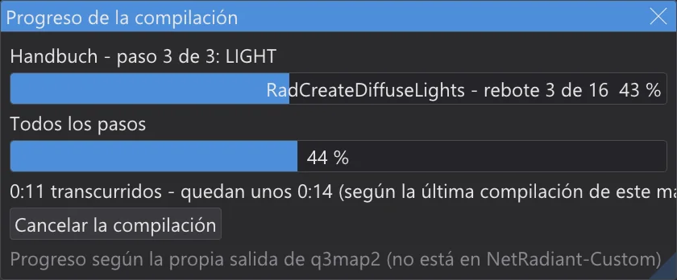
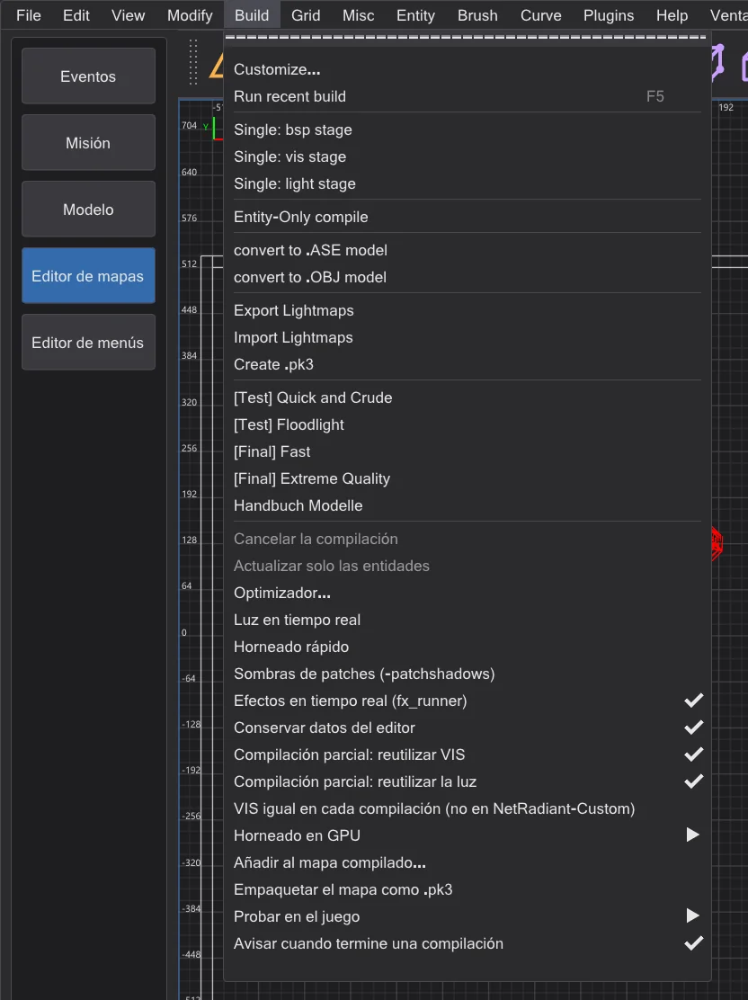
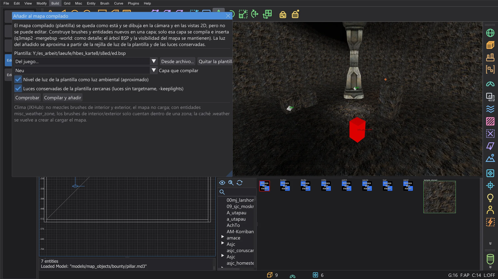
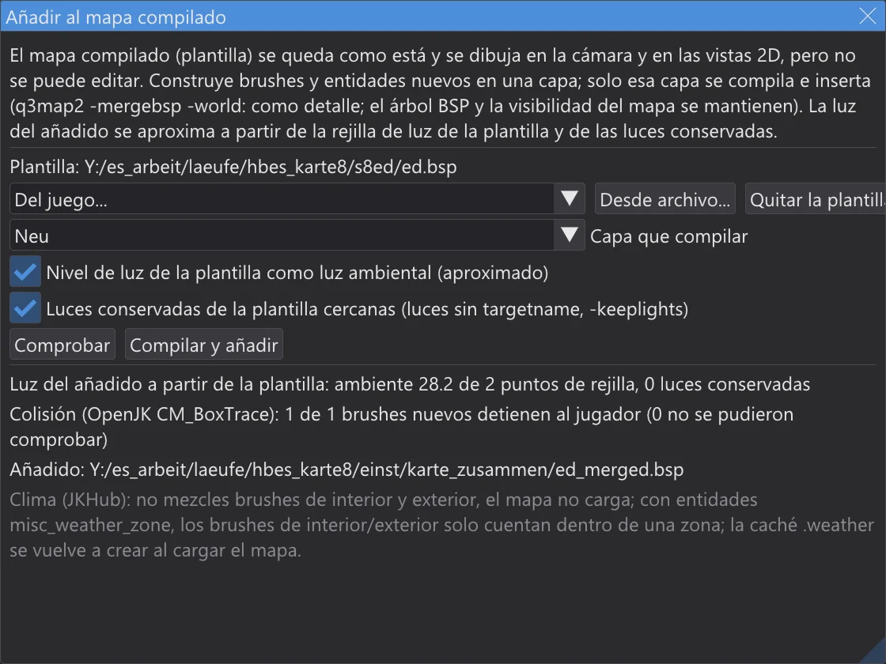

Editor de mapas: progreso de la compilación y compilaciones parciales
Mira cuánto le falta a una compilación y cuánto tardará, vuelve a compilar solo lo que cambió (con el mismo resultado que una compilación completa) y añade una parte nueva a un mapa compilado sin volver a compilar el mapa.
Progreso de la compilación#

- Mientras se ejecuta una compilación del menú Build, la ventana Progreso de la compilación muestra la entrada, el paso y su etapa (BSP, VIS, LIGHT), la fase en la que está q3map2 con su propio progreso (los puntos y cifras que imprime q3map2, o el rebote), una barra de todos los pasos y el tiempo.
- Tiempo restante: en la primera compilación de un mapa con una entrada se estima a partir de la fase en curso y se muestra como "al menos". A partir de la segunda compilación sale de los tiempos de la última compilación de este mapa con esta entrada; los tiempos de los pasos se guardan en
karte_bauzeiten.jsonen la carpeta de ajustes. - VIS completo: antes de un
-vissin-fast, la consola indica los portales, los clústeres y una estimación de la memoria que necesita el VIS, leídos del archivo de portales del paso BSP y contados como CreatePassages de q3map2. bhed_q3map2 guarda de cada pasaje solo la parte que no está vacía (md_rev_TarisUpper2: 1,4 en vez de 9 GB) e imprime tras CreatePassages lo que ocupan realmente los pasajes. A partir del número de portales del aviso de VIS del optimizador, o cuando la memoria se acerca a la que tiene el ordenador, sigue una advertencia, también en la ventana: un VIS completo puede tardar horas, en mapas abiertos días. Su progreso cuenta el trabajo esperado de los portales, no su número (los costosos van al final), así que el tiempo restante ya se acerca al real en la primera compilación. Salidas:-vis -fastpara compilaciones de prueba, los brushes estructurales pequeños que no sellan, como detail (optimizador: Decoración como estructural), y Compilación parcial: reutilizar VIS para compilaciones posteriores. Para un mapa de File > Open .bsp también dice si el original se compiló con-vis -fast. - Build > VIS igual en cada compilación (no en NetRadiant-Custom) (desactivado por defecto): con varios hilos, un VIS completo puede salir ligeramente distinto de una compilación a otra; como en el q3map2 de NetRadiant-Custom, un portal usa los otros portales que ya estén terminados en ese momento, y todos los resultados son válidos. Activado, cada paso
-visrecibe-bhedvisexact, y bhed_q3map2 calcula con todos los hilos exactamente lo mismo que un solo hilo, byte a byte. Lo necesitas para compilaciones reproducibles: el mismo .map da el mismo .bsp, para comparar dos compilaciones, para sumas de comprobación o cuando varias personas compilan el mismo mapa. Espera donde un portal necesita otro aún sin terminar: en mapas cerrados es casi igual de rápido, en mapas abiertos mucho más lento (duel_mos_espa: 5 minutos en vez de 1,5). Desactivado es el camino más rápido. - Cuando termina la compilación, la consola lista el tiempo de cada paso y lo compara con la última compilación:
1 BSP: 0.4 s (última compilación 0.5 s, -20 %). - Cancelar la compilación en la ventana detiene q3map2, como Build > Cancelar la compilación.
- Build > Avisar cuando termine una compilación (activado por defecto): si JK Studio no es la ventana activa cuando termina una compilación, su botón de la barra de tareas parpadea: sin sonido ni diálogo.
Compilaciones parciales#

Dos interruptores del menú Build permiten que cada compilación reutilice lo que no ha cambiado desde la anterior. El resultado es byte a byte el .bsp de una compilación completa: el ctest q3map2_teilbau compila mapas de las dos formas y compara los archivos.
- Compilación parcial: reutilizar VIS:
-visse ejecuta con-bhedvisreuse. bhed_q3map2 guarda la visibilidad en<mapa>.bhedvisjunto con el archivo de portales y las opciones. Si los portales (.prt), las opciones y la clave del plano lejano (_farplanedist) son iguales, copia la visibilidad en vez de calcularla; la consola dice visibilidad reutilizada. Los portales solo cambian con brushes estructurales; las entidades, los brushes de detalle, los patches y las texturas no los cambian. - Compilación parcial: reutilizar la luz:
-lightse ejecuta con-bhedlightcache. bhed_q3map2 guarda cada lightmap y la rejilla de luz en<mapa>.bhedlightcon una huella de todo lo que entra en ellos: la geometría, las luces que los alcanzan, las opciones. La ejecución siguiente calcula solo los lightmaps cuya huella cambió: mueve una luz y solo se vuelven a iluminar los lightmaps que alcanza. La consola dice cuántos salieron de la caché:light cache: 9 of 14 lightmaps …. - Solo cambió el posprocesado (
-gamma,-exposure,-compensate,-saturation,-contrast,-gridscale,-gridambientscaleo las claves de worldspawn_minlight,_minvertexlight,_mingridlight): cada lightmap y la rejilla salen de la caché, solo se vuelve a ejecutar el posprocesado, sin trazar un solo rayo.
-bounce no se usa la caché de luz: la luz de rebote acopla cada lightmap con todos los demás. Con varios hilos, el propio -vis puede diferir un poco entre ejecuciones (mira Editor de mapas: velocidad y luz en tiempo real); la visibilidad reutilizada es la de la última ejecución; para compararla con una compilación completa usa -vis -threads 1. Los archivos de caché están junto al mapa; bórralos para forzar una compilación completa. No van en el .pk3.Añadir a un mapa compilado#

- 1
Abre el mapa fuente en el que construyes el añadido (o un mapa nuevo) y elige Build > Añadir al mapa compilado. Como plantilla toma un mapa del juego (Del juego) o cualquier .bsp (Desde archivo). Se dibuja en la cámara y en las vistas 2D y no se puede seleccionar ni cambiar.
- 2
Construye el añadido (brushes, patches, entidades) en una capa propia y elígela en Capa que compilar (la capa actual viene preseleccionada).
- 3
Comprobar compila la capa y ejecuta las comprobaciones de abajo sin añadir nada. Compilar y añadir compila la capa (
-meta,-light -fast -samples 2) y la inserta conq3map2 -mergebsp -world -fixnames: como detalle en el mundo de la plantilla, cuyo árbol BSP, visibilidad y lightmaps se mantienen. El resultado es<plantilla>_merged.bspen la carpetakarte_zusammende la carpeta de ajustes; la plantilla en sí no cambia.

Qué se comprueba
- Brushes de clima:
system/insideysystem/outsideno deben mezclarse; tras combinar, un mapa con ambos no carga. Si pasara, no se añade nada. - Zonas de clima: si la plantilla o el añadido tienen entidades
misc_weather_zone, los brushes de interior y exterior solo cuentan dentro de una zona; los brushes de clima del añadido fuera de toda zona reciben un aviso, porque no tienen efecto. - Nombres: un
targetotargetnamedel añadido que también usa la plantilla se renombra con-fixnames; se pierden los enlaces entre la plantilla y el añadido. El diálogo lista esos nombres. - Límites: el .bsp combinado se cuenta como en el optimizador; un límite por encima del máximo es un error.
- Colisión: el .bsp combinado se carga en el modelo de colisión del juego (OpenJK
CM_BoxTrace, portado); cada brush sólido nuevo debe detener la caja del jugador cuando entra en él desde fuera.
-keeplights) las tiene. La rejilla de luz de la plantilla no se actualiza: los modelos y jugadores cerca del añadido se iluminan como antes. Para el mapa final, compílalo todo completo..weather al cargar el mapa, así que no hace falta borrar uno antiguo.